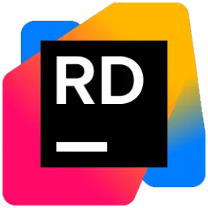
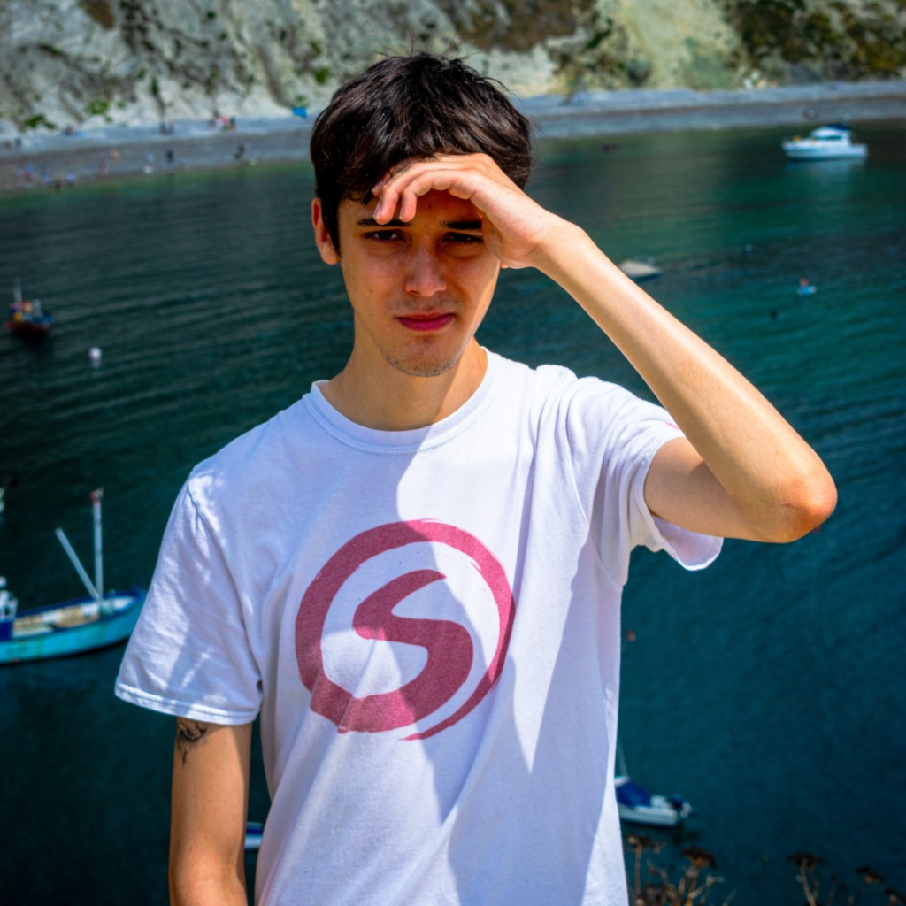

About Me
I am a final year Computer Games Development student at Staffordshire University. I have always had a passion for game development, and started programming in middle school. I am particularly experienced with Unreal Engine 5 development, and I specialise broadly within the following areas:
- Tools Programming
- UI Programming
- Gameplay & Systems Programming
I am familiar with and commonly use the following softwares within my work:


Please feel free to get in touch with me with the links below - I'd love to talk about anything at all!
I am also learning aspects of web programming, and this website has been built as a part of this!
